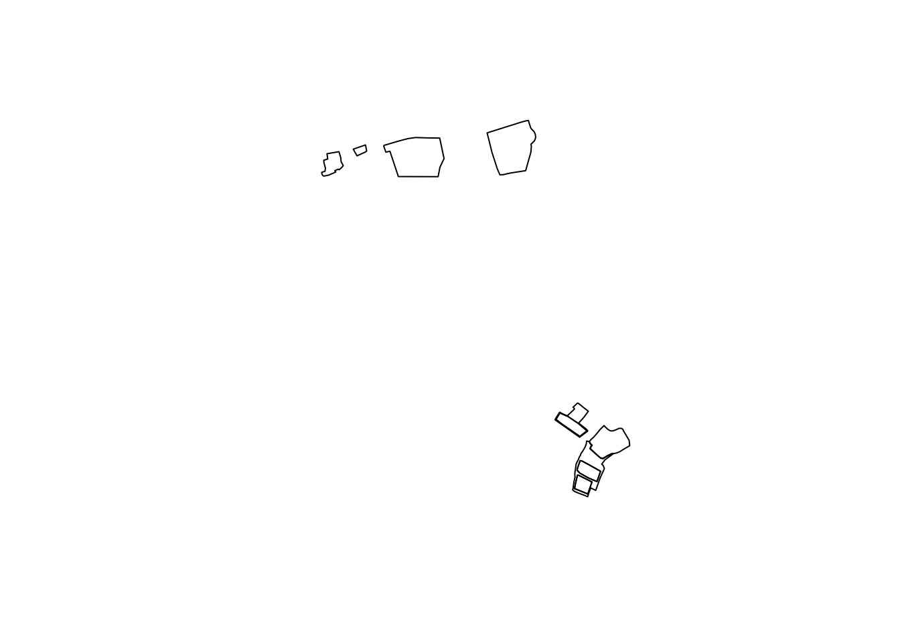

library(RPostgres)
library(dplyr)
library(knitr)
library(sf)
library(janitor)
library(aws.s3)
conn <- dbConnect(Postgres(),
user = Sys.getenv("USER_POSTGRESQL"),
password = Sys.getenv("PASS_POSTGRESQL"),
host = Sys.getenv("HOST_POSTGRESQL"),
dbname = "defaultdb",
port = 5432,
check_interrupts = TRUE)1 Utilisation de PostgreSQL
Dans cette première application, nous allons voir comment créer une base PostgreSQL sur le SSP Cloud, y importer des données, et enfin la requêter. Cette application est optionnelle, étant donné qu’une base de données PostgreSQL pré-configurée avec les tables nécessaires pour traiter ce sujet est accessible depuis n’importe quel service du SSP Cloud (nous verrons plus tard comment accéder à cette base de données).
1.1 Création d’un service PostgreSQL
Pour créer un service PostgreSQL sur le SSP Cloud, aller dans le catalogue de services et choisir l’onglet Databases avant de sélectionner PostgreSQL. Il est possible de modifier la configuration du service. La configuration par défaut conviendra dans la plupart des cas, mais on souhaitera parfois (et c’est le cas pour ce sujet) installer l’extension PostGIS (onglet Extensions de la configuration). A noter que lorsqu’on travaille en collaboration dans le cadre d’un projet, on préfèrera cliquer sur le bouton Partager le service pour rendre ce dernier plus facilement accessible à ses collaborateurs.
1.2 pgAdmin
pgAdmin est une plateforme d’administration et de développement pour PostgreSQL C’est une interface graphique pour PostgreSQL. pgAdmin est disponible dans le catalogue de service du SSP Cloud (toujours dans l’onglet Databases). Une fois le service lancé, se connecter en suivant les instructions données dans le README du service. Le serveur PostgreSQL lancé au préalable devrait être automatiquement détecté par la fonction d’Autodiscovery (panneau de gauche). Il est alors possible d’accéder aux différentes bases de données disponibles sur le serveur, de les requêter (en utilisant la fonctionnalité Query Tool), etc.
1.3 Connexion au service PostgreSQL
Le serveur PostgreSQL est facilement accessible depuis n’importe quel service interactif (par exemple RStudio). Tous les langages de programmation disposent de librairies qui implémentent une interface avec PostgreSQL. En R, on peut par exemple utiliser la librairie RPostgres, basée sur la librairie DBI.
Ci-dessous, on crée l’objet conn qui va nous permettre de communiquer avec PostgreSQL. Les paramètres user, password et host sont disponibles dans le README du service PostgreSQL (le paramètre host figure dans l’URL du README et a pour valeur postgresql-xxxxxx). Ici, on choisit de stocker ces différentes valeurs dans des variables d’environnement, USER_POSTGRESQL, PASS_POSTGRESQL et HOST_POSTGRESQL, ce qui est spécifié dans le fichier ~/.Renviron. Pour éditer ce fichier, file.edit("~/.Renviron") en y ajoutant les lignes USER_POSTGRESQL = "xxx", etc. puis relancer la session (ctrl + maj + F10).
A partir de l’objet conn, il est possible d’exécuter des requêtes et de récupérer les résultats petit à petit en utilisant les fonctions dbSendQuery, dbFetch et dbClearResult. Alternativement, pour récupérer tous les résultats de la requête directement lorsqu’ils tiennent en mémoire, on peut utiliser la fonction dbGetQuery qui rassemble les trois fonctions précédentes. Des fonctions utilitaires pour l’écriture de tables sont fournies par la librairie qu’on utilise, comme dbWriteTable pour écrire une table. Ainsi, si on a des données tabulaires stockées dans un data.frame,
df <- data.frame(
a = c("a", "b", "c"),
b = c(1, 2, 3)
)
res <- dbSendQuery(conn, "CREATE SCHEMA IF NOT EXISTS test_schema")
dbWriteTable(conn, Id(schema = "test_schema", table = "test_table"), df, overwrite = TRUE)
res <- dbGetQuery(conn, "SELECT * FROM test_schema.test_table")
res %>% kable()| a | b |
|---|---|
| a | 1 |
| b | 2 |
| c | 3 |
1.4 Utilisation de l’extension PostGIS
PostGIS est une extension de PostgreSQL, qui active la manipulation d’informations géographiques sous forme de géométries (points, lignes, polygones). Il permet à PostgreSQL d’être un système de gestion de base de données spatial pouvant être utilisé par les systèmes d’informations géographiques.
On utilise la librairie sf pour gérer les données spatiales avec R. La fonction write_sf de cette librairie permet d’écrire des données dans une base de données PostGIS. Dans la suite on va illustrer comment créer une table contenant les données du RPG (décrites en détail plus tard, la documentation figure ici). Ces données sont disponibles sur MinIO au format .gpkg.
parcelles <- s3read_using(
FUN = sf::read_sf,
query = 'SELECT * FROM parcelles_graphiques LIMIT 10',
object = "2023/sujet2/diffusion/ign/rpg/PARCELLES_GRAPHIQUES.gpkg",
bucket = "projet-funathon",
opts = list("region" = "")
)
write_sf(parcelles, conn, Id(schema = "test_schema", table = "test_parcelles"), delete_layer = TRUE)On n’a écrit que 10 observations du fichier des parcelles pour cette démontration. On peut les requêter pour vérifier que l’information géographique figure bien dans la base de données.
sf <- st_read(
conn, query = "SELECT * FROM test_schema.test_parcelles"
)
plot(st_geometry(sf))
1.5 Base de données à disposition
Dans toute la suite du sujet, on propose d’utiliser une base de données déjà préconfigurée, accessible depuis n’importe où sur le SSP Cloud. Pour accéder à cette base de données de la manière décrite ci-dessus, HOST_POSTGRES doit avoir pour valeur postgresql-758156.projet-funathon. Pour récupérer le nom d’utilisateur et le mot de passe, envoyer un message à Tom Seimandi (par mail ou sur Tchap). Dans la base de données defaultdb, les schémas adminexpress, drias et rpg contiennent les données mises à disposition pour traiter le sujet. Les participants ne disposent que des droits de lecture pour ces schémas (commande SELECT). Toutefois, le schéma public est disponible pour créer des tables temporaires, n’hésitez pas à le faire !